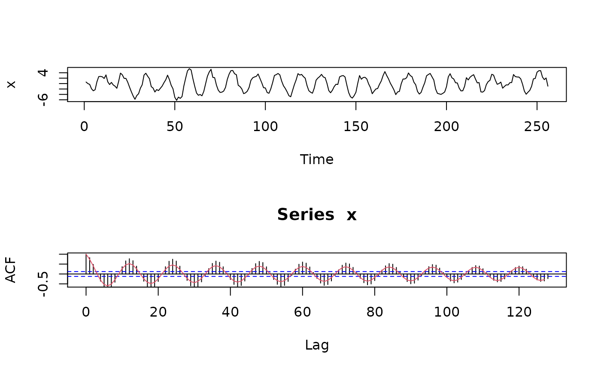

dwpt.sim.RdA seasonal persistent process may be characterized by a spectral density function with an asymptote occuring at a particular frequency in \([0,\frac{1}{2})\). It's time domain representation was first noted in passing by Hosking (1981). Although an exact time-domain approach to simulation is possible, this function utilizes the discrete wavelet packet transform (DWPT).
dwpt.sim(N, wf, delta, fG, M=2, adaptive=TRUE, epsilon=0.05)| N | Length of time series to be generated. |
|---|---|
| wf | Character string for the wavelet filter. |
| delta | Long-memory parameter for the seasonal persistent process. |
| fG | Gegenbauer frequency. |
| M | Actual length of simulated time series. |
| adaptive | Logical; if |
| epsilon | Threshold for adaptive basis selection. |
Time series of length N.
Two subroutines are used, the first selects an adaptive orthonormal basis for the true spectral density function (SDF) while the second computes the bandpass variances associated with the chosen orthonormal basis and SDF. Finally, when \($M>N$\) a uniform random variable is generated in order to select a random piece of the simulated time series. For more details see Whitcher (2001).
Hosking, J. R. M. (1981) Fractional Differencing, Biometrika, 68, No. 1, 165-176.
Whitcher, B. (2001) Simulating Gaussian Stationary Time Series with Unbounded Spectra, Journal of Computational and Graphical Statistics, 10, No. 1, 112-134.
hosking.sim for an exact time-domain method and
wave.filter for a list of available wavelet filters.
B. Whitcher
## Generate monthly time series with annual oscillation
## library(ts) is required in order to access acf()
x <- dwpt.sim(256, "mb16", .4, 1/12, M=4, epsilon=.001)
par(mfrow=c(2,1))
plot(x, type="l", xlab="Time")
acf(x, lag.max=128, ylim=c(-.6,1))
data(acvs.andel8)
lines(acvs.andel8$lag[1:128], acvs.andel8$acf[1:128], col=2)
